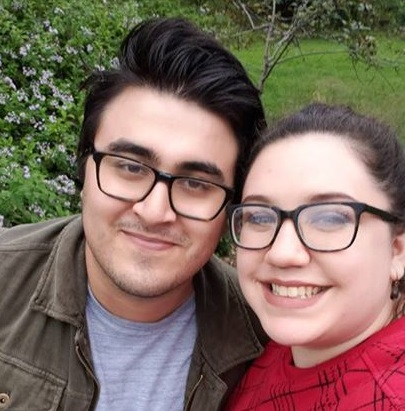
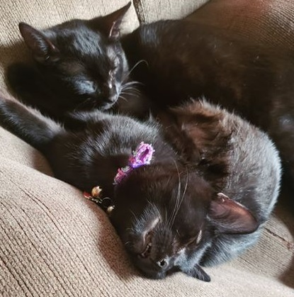

Hello, world! My name is Barish Arslan and I am a Computer Science student attending De Anza College. I live in Campbell, CA, just a few minutes from Netflix's HQ, with my girlfriend, Sarah, my mom, Sema, and my sister, Melisa.
 I currently work as an IMAC Technician for Milestone, Inc. My job mainly consists of disconnecting and reconnecting tech equipment for companies that are doing moves. There have also been a few odd jobs I've done, like installing Linux software on nVidia servers, organizing employee comments, and imaging laptops for use by employees.
I have several hobbies, one of course being programming. I really enjoy the problem solving and critical thinking aspects of programming and love to code even when I'm tired. I have tried many different fields of programming and hope to one day pick a certain topic to specialize in. I am very interested in machine learning and AI, but have not tried my hand at taking on a project yet. My philosophy in programming is to work on things that could end up helping people in some way.

I also love music, both listening to and playing. I collect records and built my own 5.1 Surround Sound system in my room. Some of my favorite artists are: Frank Ocean, Beach House, Brockhampton, St. Vincent, Deafheaven, Fleet Foxes, Foxing, Godspeed You! Black Emperor, Kendrick Lamar, Pink Floyd, and Radiohead. My favorite composer is Ludwig van Beethoven. I also love to play keyboard, guitar, and whatever other instruments I can figure out.
I love reading, hiking, camping, biking, and gardening! I am currently growing a tomato plant, a ghost pepper plant, thyme, and rosemary. I also picked up a dwarf tree and am starting the lengthy process of making my own bonsai.
I also have two little black cats, Cooper and Luna. They are just about 7 months old and are the most affectionate little kitties.